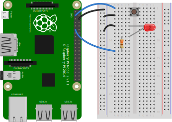
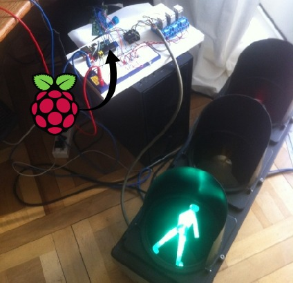

GPIO Zero
or: Designing for Education is Hard
Vital Statistics
- Name
- Ben Nuttall
- @ben_nuttall
- Blog
- bennuttall.com
Vital Statistics
- Name
- Dave Jones
- @waveform80
- GitHub
- github.com/waveform80
So, what is it?
A library that makes physical computing easy
LED blink

from RPi import GPIO
from time import sleep
GPIO.setmode(GPIO.BCM)
GIPO.setwarnings(False)
GPIO.setup(17, GPIO.OUT)
while True:
GPIO.output(17, 1)
sleep(1)
GPIO.output(17, 0)
sleep(1)
from gpiozero import LED
from signal import pause
led = LED(17)
led.blink()
pause()
Why?
You see things; and you say "Why?" But I dream things that never were; and I say "Why not?"
— George Bernard Shaw, Back to Methuselah
Why not?
Because you're making it too easy!
— John Q. Public, The Internet
Lesson 1:
There's no such thing as “too easy”
Query a web-page
requests
urllib
socket
But that's work, we're talking about education. It's meant to be harder!
— John Q. Public, The Internet
Lesson 2:
“Easy” is a continuum
Why is Python great for teaching?
do_this()
do_that()
if this:
do_one_thing()
else:
do_another()
def do_this():
return that
while True:
that = do_this()
if not that:
break
class Animal(Eukaryote):
def eat(self, food): pass
def excrete(self, where): pass
class Fungi(Eukaryote):
def sit_around(self): pass
def release_spores(self, n): pass
And GPIO Zero?

from gpiozero import LED, Button
led = LED(17)
btn = Button(2)
while True:
if btn.is_pressed:
led.on()
else:
led.off()
from gpiozero import LED, Button
from signal import pause
led = LED(17)
btn = Button(2)
btn.when_pressed = led.on
btn.when_released = led.off
pause()
from gpiozero import LED, Button
from signal import pause
led = LED(17)
btn = Button(2)
led.source = btn.values
pause()
Easy!

from travispy import TravisPy
from gpiozero import LED
from gpiozero.tools import negated
from time import sleep
from signal import pause
def status(repo, delay=3600):
t = TravisPy()
r = t.repo(repo)
while True:
yield r.last_build_state == 'passed'
sleep(delay) # don't hit Travis constantly
tl = TrafficLights(21, 20, 16)
tl.red.source = negated(tl.green.values)
tl.green.source = status('RPi-Distro/python-gpiozero')
pause()
Lesson 3:
Making things easy is hard
Dive Dive Dive!
class LED(DigitalOutputDevice):
pass
class DigitalOutputDevice(OutputDevice):
def __init__(
self, pin=None, active_high=True,
initial_value=False): pass
def close(self): pass
def on(self): pass
def off(self): pass
def blink(
self, on_time=1, off_time=1, n=None,
background=True): pass
class OutputDevice(SourceMixin, GPIODevice):
def __init__(
self, pin=None, active_high=True,
initial_value=False): pass
def on(self): pass
def off(self): pass
def toggle(self): pass
@property
def value(self): pass
@property
def active_high(self): pass
class GPIODevice(Device):
def __init__(self, pin=None): pass
def close(self): pass
@property
def closed(self): pass
@property
def pin(self): pass
@property
def value(self): pass
class Device(ValuesMixin, GPIOBase):
@property
def value(self): pass
@property
def is_active(self): pass
class GPIOBase(GPIOMeta(nstr('GPIOBase'), (), {})):
def __setattr__(self, name, value): pass
def __del__(self): pass
def close(self): pass
@property
def closed(self): pass
def __enter__(self): pass
def __exit__(self, exc_type, exc_value, exc_tb): pass
Meta-classes: why?!
class GPIOBase(GPIOMeta(nstr('GPIOBase'), (), {})):
def __setattr__(self, name, value): pass
def __del__(self): pass
def close(self): pass
@property
def closed(self): pass
def __enter__(self): pass
def __exit__(self, exc_type, exc_value, exc_tb): pass
Lesson 4:
Debugging is a hard skill
What went wrong…?
from gpiozero import Button
from signal import pause
def button_was_pressed():
print("Don't push the button!")
b = Button(21)
b.pressed = button_was_pressed
pause()
>>> from gpiozero import Button
>>> def button_was_pressed():
... print("Don't push the button!")
...
>>> b = Button(21)
>>> b.pressed = button_was_pressed
Traceback (most recent call last):
File "", line 1, in
File "gpiozero/devices.py", line 158, in __setattr__
self.__class__.__name__, name))
AttributeError: 'Button' object has no attribute 'pressed'
More Horror!
import inspect # OH NOES!
import weakref
from functools import wraps
from threading import Event
from collections import deque
from time import time
try:
from statistics import median
except ImportError:
from .compat import median
class EventsMixin(object):
# ...
@when_activated.setter
def when_activated(self, value):
# That doesn't sound good ...
self._when_activated = self._wrap_callback(value)
def _wrap_callback(self, fn):
if fn is None:
return None
elif inspect.isbuiltin(fn):
return fn
else:
try:
inspect.getcallargs(fn)
return fn
except TypeError:
inspect.getcallargs(fn, self)
@wraps(fn)
def wrapper():
return fn(self)
return wrapper

No boilerplate!
from gpiozero import Button
from signal import pause
def button_was_pressed(btn): # <--- mandatory parameter
print("Don't push the button!")
b = Button(21)
b.when_pressed = button_was_pressed
pause()
from gpiozero import Button
from signal import pause
def button_was_pressed(): # <--- not so mandatory parameter
print("Don't push the button!")
b = Button(21)
b.when_pressed = button_was_pressed
pause()
Vital Statistics
- Name
- Dave Jones
- Occupation
- Making scary code, so you don't have to!
- @waveform80
- GitHub
- github.com/waveform80
Available Now!
from your nearest web-server
www.waveform.org.uk/presentations/gpiozero/Thank You
Questions?